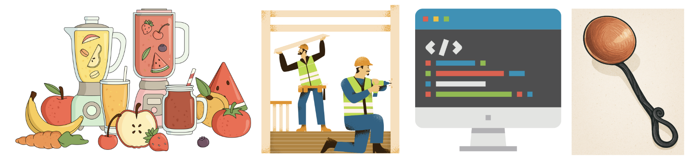

Hi! I'm Kristen Farah, currently in my third year at
Australian Catholic University (ACU)
studying a Bachelor of Education (Secondary) / Bachelor of Arts (Design Innovation and Technologies).
I major in Food Technology and Design and Technology, with minors in Industrial Technology (Timber and Metal work) and Computing.
I’m passionate about practical learning that helps students build real-world skills in the kitchen, the workshop, and beyond.